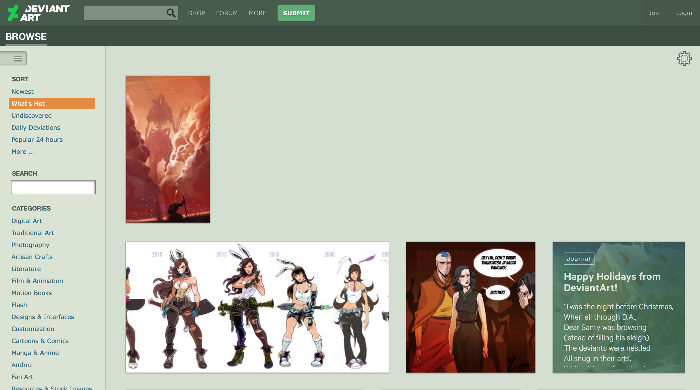

DeviantArt
DeviantArt is a site that has been around for years – artists of all ages have used it since 2000, so many feel that it gives a relatively amateur feel to art displaying. Even at first glance, it's clear that the artists using this site are primarily illustrators or graphic artists. There is some photography and a section for artisan crafts, but beyond that, there is not much tangible artwork on here – most of it is digital.
The homepage, which takes you to "What's Hot" has an endless scroll, that may not be the best solution given the continual loading data. It's apparent that the main purpose of DeviantArt is to showcase work and receive feedback (critical or complimentary) about the piece. There are also sections of the site that allow for discussion in forums as well as buying art pieces. It may not be the most elegant-designed site, but it serves its purpose fairly well and seems generally easy to navigate, as the main nav bar is fixed to the left side. Hovering over images gives a preview of the important information: piece title, username, features, and comments.
On the pages showing the artist's content, there's options to download, share on various social media, and see more from the artist. These essential functions are easy to find, prominent enough, and appear in an order that makes the most sense. Given this layout as well as the homepage layout, it is apparent that DeviantArt is inclined towards the artist rather than their audience, which I'm sure many artists will appreciate. Having a positive community of artists to share work with is undoubtedly a way to stay engaged and continually be inspired. Overall, I think the design of the site is very functional and has fairly great user experience. The tone doesn't necessarily speak to me as an artist's platform, but they have had this muted green branding for as long as I can remember.